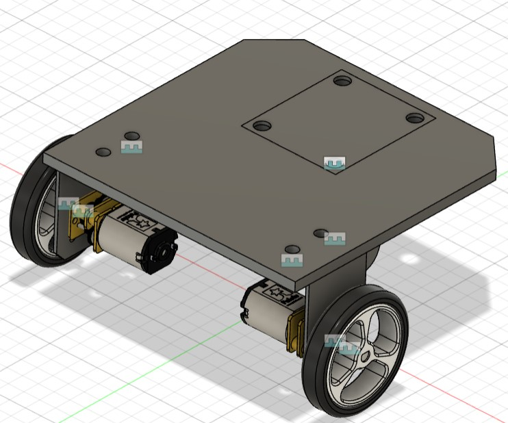
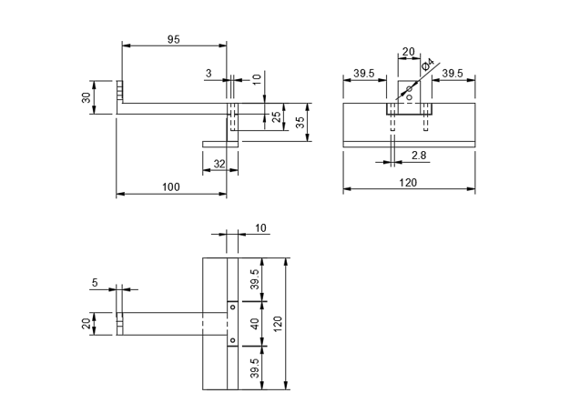
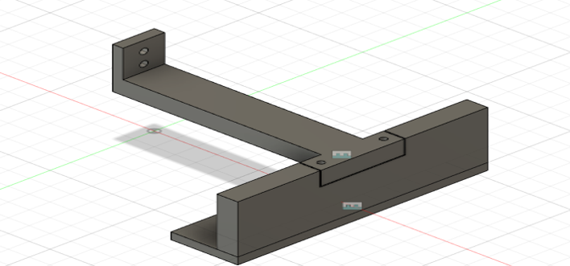
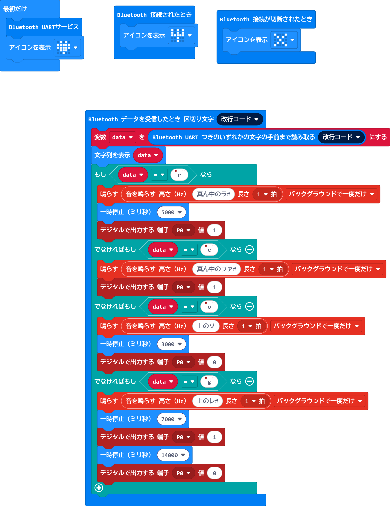

自己紹介
こんにちは！私は大阪高専の4年生でメカトロ系を専攻しています。
作品一覧
作品1 「モータ付きの二輪ロボット」
この作品は３年次に設計したものになります。 使用したソフトはfusion360。 タイヤのホイールの形などを自分で決め設計した。
作品2「サーボモータ」
この作品は３年次に設計したものになります。 使用したソフトはfusion360。 サーボモータにアームを取り付けて、 複数のリンクとギア連動して動くことでものをつかんだり反したりする動作をする。
作品3「基礎研究」
これは4年次に取り組んだ課題です。 「身体が不自由な人たちが利用のしやすいお寿司屋さん」をコンセプトに4人で製作に取り掛かりました。 ロボットのアームはシンプルで、UFOキャッチャーのようなハンドを作成した。  
音声認識を用いて、アームの動作を制御しました。 teachable machineという機械学習モデルを作成できる ウェブベースのツールを使用し、音声認識のプログラムを作成した。 音声データを5つ作成し、各音声データごとにアームの動きをつけました。
マイコンには、micro:bitを使いました。 micro:bitには以下のような動作をさせました。 
スキル
- プログラミング言語(期間) : python(1年程)、C言語(2年程)、Arduino言語(2年程)
- 工作機械 : 卓上旋盤、卓上ボール盤、レーザーカッタ、3Dプリンタ（学校授業程度）
- ソフトウェア : KiCad、Creo、Fusion360、tinkercad、teachable machine、Word、Excel、PowerPoint(学校授業程度)
- マイコン : Raspberry Pi、micro:bit、Arduino Uno(学校授業程度)
連絡先
メール: r21008@st.omu.ac.jp
電話: [あなたの電話番号]
LinkedIn: [あなたのLinkedInプロフィール]